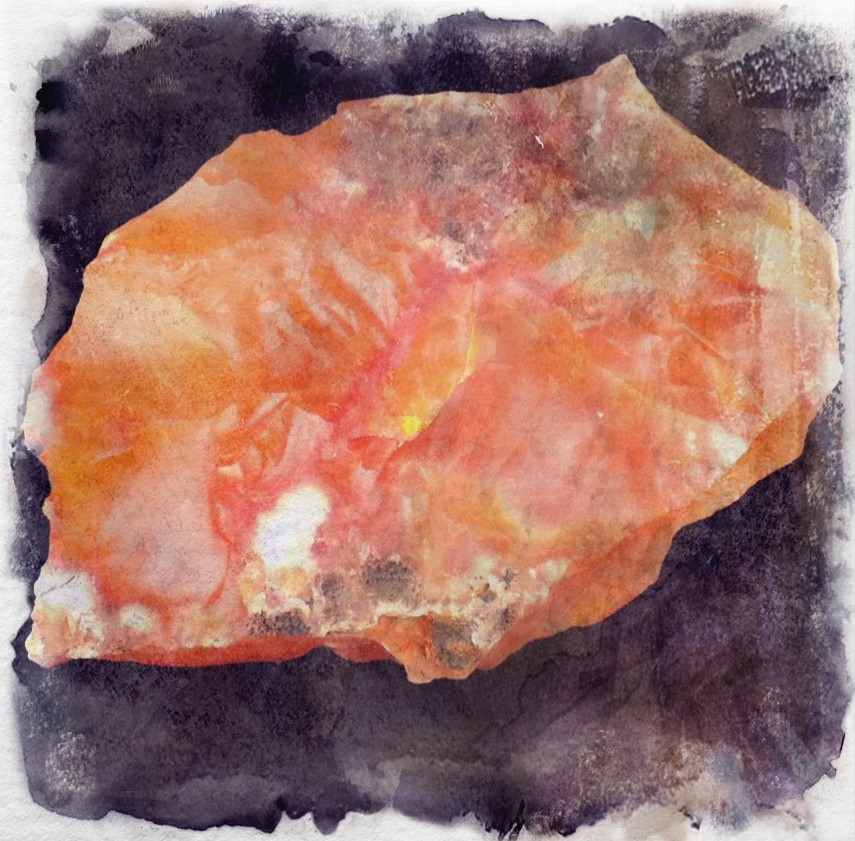

Carnelian
A volcanic mineral formed by magma, these gemstones are coloured from orange through to red, brown and almost black. These soft stones are ideal for engraving, plating and drilling through. They are typically used for seals and signet rings as wax does not stick to them.